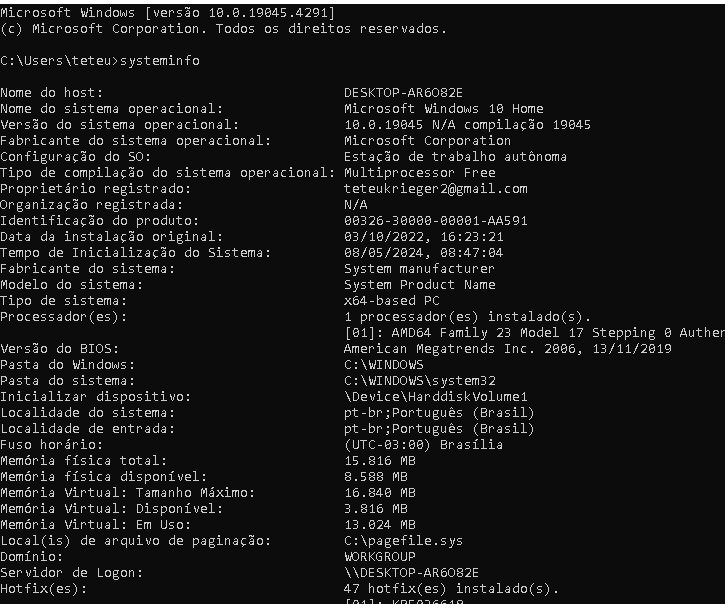
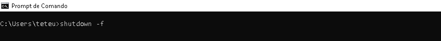
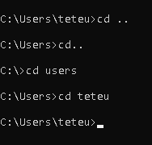
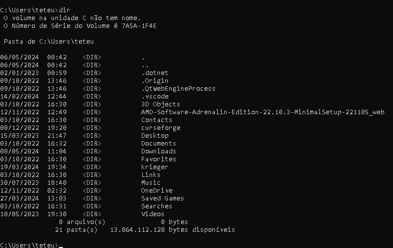

Systeminfo: Comando que mostra varias informações do sistema

Shutdown: Deliga a maquina

Cd(change directory): Muda o diretorio atual

Dir: Lita todos os diretorios existentes dentro da pasta no qual se encontra

mkDir: Cria uma pasta no seu diretorio atual
type: Exibe o que tem dentro de um arquivo
Cls: limpa todos os comandos digitados anteriormente
echo: comando usado para exibir mensagens de texto
del: comando para excluir arquivos
copy: copia um arquivo local para outro
ren: renomeia o arquivo ou pasta
attrib: usado para exibir ou modificar atributos de diretorios e arquivos, atributos esse que incluem somente leitura, oculto e outros.